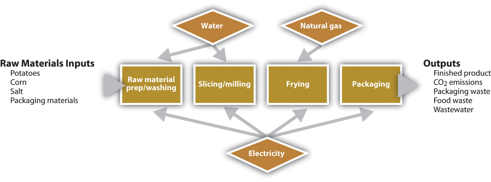

The second case, Frito-Lay (PepsiCo), examines innovative activity that has been ongoing for several years at a manufacturing facility in Arizona. Large firms typically struggle to implement significant change, yet this example shows how established companies can take steps that ultimately create innovative and systemic outcomes guided by sustainability principles that benefit multiple stakeholders.
It was late 2007, and Al Halvorsen had assembled his team of managers from across Frito-Lay North America (FLNA) to make a final decision on an ambitious proposal to take one of its nearly forty manufacturing plants “off the grid”The expression “off the grid” means reducing or eliminating a facility’s reliance on the electricity and natural gas grids and on water utilities for production inputs. through the installation of cutting-edge energy- and water-saving technologies. After a decade of successful initiatives to improve the productivity of operations and to reduce the energy and other resources used in the production of the company’s snack products, senior managers had decided that it was time to take their efforts to the next level.
Frito-Lay’s resource conservation initiatives started in the late 1990s. Company managers recognized potential operating challenges as they faced rising utility rates for water, electricity, and natural gas; increasing resource constraints; and expected government-imposed limits on greenhouse gas (GHG) emissions. These challenges had implications for the company’s ability to deliver sustained growth to its shareholders.
The programs the company put in place resulted in a decade of efficiency improvements, leading to incremental reductions in fuel consumption, water consumption, and GHG emissions. Each project’s implementation helped the operations and engineering teams within the organization grow their institutional knowledge and expertise in a range of emerging technologies.
By 2007, managers were starting to wonder how far they could take efforts to improve the efficiency and environmental impact of operations. Al Halvorsen was several months into a new initiative to evaluate the feasibility of bundling several innovative technologies at one manufacturing facility to maximize the use of renewable energy and dramatically reduce the consumption of water. By leveraging the expertise of the in-house engineering team, and grouping a number of technologies that had been previously piloted in isolation at other facilities, Halvorsen believed that a superefficient facility prototype would emerge that could serve as a learning laboratory for the improvement of the company’s overall manufacturing practices.
Halvorsen had asked the members of his cross-functional team of managers from across the organization to evaluate the broad scope of challenges involved with creating what was dubbed a “net-zero” facility. The project would likely push the boundaries of current financial hurdles for capital expenditure projects but would result in a number of tangible and intangible benefits. After months of evaluation, the time had come to decide whether to go forward with the project.
Frito-Lay North America is one of the nation’s best-known snack-food companies, with origins in the first half of the twentieth century. In 1932, Elmer Doolin started the Frito Company after purchasing manufacturing equipment, customer accounts, and a recipe from a small corn-chip manufacturer in San Antonio, Texas. That same year, Herman W. Lay of Nashville, Tennessee, started a business distributing potato chips for the Barrett Food Products Company.
The two companies experienced dramatic growth in the ensuing years. Herman Lay expanded his distribution business into new markets and in 1939 bought the manufacturing operations of Barrett Foods to establish the H. W. Lay Corporation. The Frito Company expanded production capacity and broadened its marketing presence by opening a western division in Los Angeles in 1941. Although the war years posed significant challenges, the two companies emerged intact and won the hearts of American GIs with products that provided a tasty reminder of home.
Both companies experienced rapid growth in the postwar boom years, fueled by an ever-expanding product selection and the development of innovative distribution networks. By the mid-1950s, the H. W. Lay Corporation was the largest manufacturer of snack foods in the United States, and the Frito Company had expanded its reach into all forty-eight states. As the two companies expanded nationally, they developed cooperative franchise arrangements. In 1961, after several years of collaboration, the companies merged to form Frito-Lay Inc., the nation’s largest snack-food company.
In the years following the creation of Frito-Lay, the company continued to experience rapid growth and changes in its ownership structure. In 1965, a merger with Pepsi-Cola brought together two of the nation’s leading snack and beverage companies under one roof. The resulting parent, PepsiCo Inc., was one of the world’s leading food companies in 2007 and a consistent presence on Fortune’s “America’s Most Admired Companies” list. The company includes a number of other iconic brands such as Tropicana juices, Gatorade sports drinks, and Quaker foods. (See Figure 5.9 "PepsiCo Business Units" for a diagram of PepsiCo’s business units.)
Figure 5.9 PepsiCo Business Units

Source: Andrea Larson, Frito-Lay North America: The Making of a Net Zero Snack Chip, UVA-ENT-0112 (Charlottesville: Darden Business Publishing, University of Virginia, May 4, 2009).
By 2007, the Frito-Lay business unit owned more than fifteen brands that each grossed more than $100 million in annual sales. The most well-known brands included Lay’s potato chips, Fritos corn chips, Cheetos cheese-flavored snacks, Ruffles potato chips, Doritos and Tostitos tortilla chips, Baked Lay’s potato crisps, SunChips multigrain snacks, and Rold Gold pretzels.
By the 1990s, PepsiCo’s Frito-Lay business unit was experiencing healthy growth in earnings and was continuing to expand internationally. In the United States and Canada, Frito-Lay North America was operating more than forty manufacturing facilities, hundreds of distribution centers and sales offices, and a sizeable fleet of delivery vehicles. As the company grew, the costs associated with operating these assets increased as well.
Increasing resource costs, fuel price volatility, and emerging concerns about future resource availability started to worry managers during this time period. Members of the environmental compliance group took the initiative and expanded their traditional regulatory compliance role to also focus proactively on resource conservation as a cost-reduction strategy. Later, a resource conservation and energy team was formed at Frito-Lay’s Plano, Texas, headquarters to coordinate efficiency initiatives across the portfolio of manufacturing and distribution facilities. At the facility level, “Green Teams” and “Energy Teams,” consisting of plant operators and line workers, assembled to closely monitor daily energy and water usage and to identify and implement productivity-boosting resource conservation projects.
Initial results of the resource conservation program were positive, with projects paying back well within the corporate financial benchmark of two to three years and achieving incremental reductions in energy and water use. The company’s senior management, including then CEO Al Bru, took notice of these results and set the stage for a more ambitious program at a time when competitors were only dabbling in the implementation of more efficient business processes.
In 1999, Senior Vice President of Operations Jim Rich challenged the team to expand its efforts into a company-wide effort to reduce resource use and costs. Managers at headquarters defined a set of stretch goals that, if achieved, would take the company’s efforts to the cutting edge of what was feasible on the basis of available technologies while still meeting corporate financial hurdles for the approval of capital expense projects. This set of goals, affectionately known as the BHAGs (“Big Hairy Audacious Goals”),The term “Big Hairy Audacious Goals” is borrowed from James Collins and Jerry Porras’s book Built to Last: Successful Habits of Visionary Companies (New York: HarperCollins, 1997). called for the following efforts:
Over the next eight years, the Resource Conservation Team and facility Green Teams set about designing, building, and implementing projects across the portfolio of FLNA facilities. Both new and established technologies were piloted, and responsibility was placed on line employees to implement improved operating practices and to monitor variances in resource usage from shift to shift. A growing group of in-house engineering experts—both at headquarters and at manufacturing facilities—oversaw these initiatives, bypassing the need to hire energy service companies (ESCOs), outside consultants often hired for these types of projects, and ensuring that FLNA developed and retained valuable institutional knowledge.
By 2007, the team estimated that it was saving the company $55 million annually in electricity, natural gas, and water expenses, compared with 1999 usage, as a result of the projects implemented to date. Piloted technologies included photovoltaic cells, solar concentrators, landfill gas capture, sky lighting, process steam recapture, and many other energy and water efficiency measures.
In 2006, Indra Nooyi was selected as the new chairman and CEO of the PepsiCo. As a thirteen-year veteran of the company, and the former CFO, she was supportive of the resource conservation initiatives at Frito-Lay and within other operating divisions. Nooyi set forth her vision for PepsiCo of “Performance with Purpose” in a speech on December 18, 2006, in New Delhi. “I am convinced that helping address societal problems is a responsibility of every business, big and small,” she said. “Financial achievement can and must go hand-in-hand with social and environmental performance.”Indra K. Nooyi, “Performance with a Purpose” (speech by PepsiCo President and CEO at the US Chamber of Commerce–India/Confederation of Indian Industry, New Delhi, India, December 18, 2006), accessed January 10, 2011, http://www.wbcsd.org/DocRoot/61wUYBaKS2N35f9b41ua/IKN-IndiaSpeechNum6FINAL.pdf. This statement established her triple-bottom-line vision for growth at the company.The term triple-bottom-line refers to a concept advanced by John Elkington in his book Cannibals with Forks: The Triple Bottom Line of 21st Century Business (Mankato, MN: Capstone Publishers, 1998). Companies that embrace triple-bottom-line thinking believe that to achieve sustained growth in the long term, they must demonstrate good financial, environmental, and social performance, also referred to as “sustainable business.”
In line with this new vision, and with the support of the FLNA finance team, what started as a productivity initiative began to push the boundaries of traditional business thinking about the value of “sustainable” operating practices. By the end of the twenty-first century’s first decade, all PepsiCo business units were adding environmental and resource conservation criteria to the capital expense approval process. With buy-in from the FLNA CFO, the benchmarks for capital expenditure projects were extended if a project could demonstrate additional benefits outside of traditional net present value calculations. This change was justified on the following grounds:
A secondary benefit of FLNA’s conservation initiatives was the collection of rich data about operations, productivity, and resource usage. The efforts of each facility Energy Team to implement the corporate resource conservation program resulted in an in-depth understanding of the impact each project had on fuel and electricity consumption in the manufacturing process. Managers at headquarters were able to piece together an aggregate picture of energy consumption across the organization.
Around the same time period, managers within the environmental compliance group started to voice their opinion that the company should be documenting its success in improving the energy efficiency of its operations. During the 1990s, the issue of climate change was receiving increased attention globally—and the Clinton administration was warning that reductions in US emissions of GHGs would be necessary in the future as a part of the solution to this emerging global problem. FLNA managers believed that future climate regulation was likely and were concerned that they might be penalized relative to their competitors in the event that the government limited GHG emissions from manufacturing operations. Future emissions caps were likely to freeze a company’s emissions at their current levels or to mandate a reduction to a lower level. Managers were concerned that all the reductions in emissions made by the company prior to the establishment of a regulatory limit would be ignored. As a result, they sought out potential venues for documenting their successes.
Through dialogues with the US Environmental Protection Agency (EPA), the company learned about a new voluntary industry partnership program aimed at the disclosure and reduction of corporate emissions of GHGs. The Climate Leaders program was the flagship government initiative aimed at working with US companies to reduce GHG emissions, and it provided its partners with a number of benefits. The program, a government-sponsored forum for disclosure of emissions information, offered consulting assistance to companies in the creation of a GHG emissions inventory. In exchange for these benefits, Climate Leaders partners were required to annually disclose emissions and to set a meaningful goal and date by which they would achieve reductions.
In 2004, FLNA signed a partnership agreement with Climate Leaders—publicly disclosing its corporate emissions since 2002.The Climate Leaders program allowed individual business units or parent corporations to sign partnership agreements. In the years since FLNA signed its partnership with Climate Leaders, PepsiCo started reporting the aggregate emissions of all business units via the Carbon Disclosure Project (CDP). The emissions data presented in this case are included in the consolidated emissions reported by PepsiCo through the CDP. By joining the program, FLNA challenged itself to improve the efficiency of its operations even more. A corporate goal of reducing carbon dioxide (CO2) equivalent emissions per ton of manufactured product by 14 percent from 2002 to 2010 was included as a part of the partnership agreement. Public inventory results through 2007 are provided in Table 5.1 "FLNA Public GHG Inventory Results, 2002–7" and include emissions from the following sources:
Table 5.1 FLNA Public GHG Inventory Results, 2002–7
| Scope 1 Emissions (Metric Tons CO2 Eq) | Scope 2 Emissions (Metric Tons CO2 Eq) | Total Emissions (Metric Tons CO2 Eq) | Metric Tons of Product Manufactured | Normalized Total | |
|---|---|---|---|---|---|
| 2002 | 1,072,667 | 459,088 | 1,530,755 | 1,287,069 | 1.19 |
| 2003 | 1,081,634 | 452,812 | 1,534,446 | 1,304,939 | 1.18 |
| 2004 | 1,066,906 | 455,122 | 1,522,028 | 1,324,137 | 1.15 |
| 2005 | 1,113,061 | 464,653 | 1,577,714 | 1,401,993 | 1.13 |
| 2006 | 1,076,939 | 456,466 | 1,533,405 | 1,394,632 | 1.10 |
| 2007 (Projected) | 1,084,350 | 442,425 | 1,526,775 | 1,442,756 | 1.06 |
Source: PepsiCo Inc., Annual Reports, 2002–7, accessed March 14, 2011, http://pepsico.com/Investors/Annual-Reports.html; US EPA Climate Leaders inventory reporting, 2002–7; and Environmental Protection Agency, Climate Leaders, “Annual GHG Inventory Summary and Goal Tracking Form: Frito-Lay, Inc., 2002–2009,” accessed March 17, 2011, http://www.epa.gov/climateleaders/documents/inventory/Public_GHG_Inventory_FritoLay.pdf.
By 2007, FLNA was well on its way to achieving the goal of a 14 percent reduction in normalized emissionsEmissions reduction goals are generally stated in either “absolute” or “normalized” terms. In the former, a company commits to reduce the total emissions generated over some period of time. In the latter, a commitment is made to reduce the emissions generated per some unit of production (e.g., pounds of product, units manufactured, etc.). A normalized emissions metric can illustrate increased efficiency in manufacturing a product or producing a service over time and is often preferred by businesses that are growth oriented.—having reduced emissions by 11 percent in the prior five years. Resource conservation projects had been rolled out at plants and distribution centers across North America to improve the efficiency with which products were manufactured and distributed to retailers.
Over the same seven-year period, top-line sales grew by 35 percent.Sales data are extracted from publicly available PepsiCo Inc. annual reports, 2002–7. PepsiCo, “Annual Reports,” accessed January 7, 2011, http://www.pepsico.com/Investors/Annual-Reports.html. As a result of the increase in sales and decrease in emissions intensity, absolute emissions, or the sum total of emissions from all sources, remained relatively flat during this period. (See Figure 5.10 "Growth in FLNA Sales and Emissions over Time" for a summary of growth in sales and emissions over time.)
Figure 5.10 Growth in FLNA Sales and Emissions over Time

Source: PepsiCo Inc., Annual Reports, 2002–7, accessed March 17, 2011, http://pepsico.com/Investors/Annual-Reports.html.
For most companies, this substantial reduction in emissions intensity per unit of production would be cause for celebration. Although FLNA managers were pleased with their progress, they were hopeful that future projects could reduce absolute emissions—enabling the company to meet or exceed future regulatory challenges by arresting the growth of GHG emissions while continuing to deliver sustained growth in earnings to shareholders. For the innovators at FLNA, and PepsiCo as a whole, this strategy was part of fulfilling the “Performance with a Purpose” vision set forth by their CEO.
It was time to set a new goal for the team. As they had done almost ten years before, members of the resource conservation team floated ideas about how they could push the limits of available technologies to achieve a new, more aggressive goal of cutting absolute resource usage without limiting future growth prospects. A variety of technologies was available to the team, many of which had been piloted separately at one or more facilities.
One manager asked the question, “What if we could package all these technologies together in one place? How far off the water, electricity, and natural gas grids could we take a facility?”Andrea Larson, Frito-Lay North America: The Making of a Net Zero Snack Chip, UVA-ENT-0112 (Charlottesville: Darden Business Publishing, University of Virginia, May 4, 2009).The team developed this kernel of an idea, which came to be the basis for what would be a new type of facility. The vision for this net-zero facility was simple: to maximize the use of renewable energy and to dramatically reduce the consumption of water in a manufacturing plant.
Planning for its pilot net-zero facility began in earnest. Rather than build a new manufacturing facility, managers selected one of the company’s existing plants for extensive upgrades. But selecting which plant to use for the pilot was in itself a challenge, due to the varying effectiveness of certain renewable technologies in different geographic regions, production line characteristics, plant size considerations, and other factors.
With the assistance of the National Renewable Energy Laboratory (NREL), members of the headquarters operations team began evaluating a preselected portfolio of seven plants on the basis of a number of key criteria. Available energy technologies were mapped over geographic facility locations to predict potential effectiveness (e.g., solar panels were more effective in sunnier locales). An existing software model was modified to determine the best combination of renewable technologies by location while minimizing life-cycle costs of the proposed projects.
The results of the NREL model, when combined with a number of other qualitative factors, pointed to the Casa Grande, Arizona, manufacturing plant as the best location to pilot the net-zero facility. Casa Grande’s desert location in the distressed Colorado River watershed made it a great candidate for water-saving technologies, and the consistent sunlight of the Southwest made it a prime facility for solar energy technologies. Approximately one hundred acres of available land on the site provided plenty of space for deploying new projects. In addition, Casa Grande was a medium-size manufacturing operation, ensuring that the project would be tested at a significant scale to produce transferable results.
Casa Grande was a manufacturing location for Lay’s potato chips, Doritos tortilla chips, Fritos corn chips, and Cheetos cheese-flavored snacks and was the planned location for a future SunChips multigrain snacks production line. Although the ingredients for each product were different, the production processes were somewhat similar. Water was used in the cleaning and processing of ingredients. Energy in the form of electricity and natural gas was used to power production equipment, heat ovens, and heat cooking oil. A summary diagram of the production process for the snacks is provided in Figure 5.11 "Production Process at Casa Grande, Arizona, Plant".
Figure 5.11 Production Process at Casa Grande, Arizona, Plant
Source: Andrea Larson, Frito-Lay North America: The Making of a Net Zero Snack Chip, UVA-ENT-0112 (Charlottesville: Darden Business Publishing, University of Virginia, May 4, 2009).
Per the net-zero vision, a number of new technologies were being evaluated in concert as replacements for current technologies. These proposals included the following:
Although this combination of technologies had never before been piloted at a single facility, the results from individual projects at other facilities suggested that results at Casa Grande would be very promising. Based on these past experiences, the resource conservation team expected to achieve a 75 percent reduction in water use, an 80 percent reduction in natural gas consumption, and a 90 percent reduction in purchased electricity. Approximately 80 percent of the reduction in natural gas would come through the substitution of biomass fuels. (See Table 5.2 "Summary of Resource Use and Production at Casa Grande, Arizona, 2002–10 (Projected)" for a summary of historical and projected resource use and production at Casa Grande.)
Table 5.2 Summary of Resource Use and Production at Casa Grande, Arizona, 2002–10 (Projected)
| Electricity Usage (kWh) | Average per kWh Price (Dollars) | Natural Gas Usage (mmBtu) | Average per mmBtu Price (Dollars) | Water Usage (Kilo-Gallons) | Average per Kilo-Gallon Price (Dollars) | Metric Tons of Product Manufactured | |
|---|---|---|---|---|---|---|---|
| 2002 | 18,000,000 | 0.072 | 350,000 | 4.00 | 150,000 | 1.20 | 45,455 |
| 2003 | 18,360,000 | 0.074 | 357,000 | 4.60 | 153,000 | 1.26 | 46,818 |
| 2004 | 18,727,200 | 0.076 | 364,140 | 5.29 | 156,060 | 1.32 | 48,223 |
| 2005 | 19,101,744 | 0.079 | 371,423 | 6.08 | 159,181 | 1.39 | 49,669 |
| 2006 | 19,483,779 | 0.081 | 378,851 | 7.00 | 162,365 | 1.46 | 51,159 |
| 2007 | 19,873,454 | 0.083 | 386,428 | 8.05 | 165,612 | 1.53 | 52,694 |
| 2008 (Projected) | 20,270,924 | 0.086 | 394,157 | 9.25 | 168,924 | 1.61 | 54,275 |
| 2009 (Projected) | 20,676,342 | 0.089 | 402,040 | 10.64 | 172,303 | 1.69 | 55,903 |
| 2010 (Projected) | 21,089,869 | 0.091 | 410,081 | 12.24 | 175,749 | 1.77 | 57,580 |
| Note: Actual operating data are disguised but directionally correct. | |||||||
Source: Andrea Larson, Frito-Lay North America: The Making of a Net Zero Snack Chip, UVA-ENT-0112 (Charlottesville: Darden Business Publishing, University of Virginia, May 4, 2009).
After months of preparation and discussions, the net-zero team gathered in Plano, Texas, and via teleconference to decide the fate of the Casa Grande project. In the room were representatives from Operations, Marketing, Finance, and Public Affairs. On the phone from Arizona was Jason Gray, chief engineer for the Casa Grande facility and head of its Green Team. Leading the discussion were Al Halvorsen, the Resource Conservation Team leader, and Dave Haft, group vice president for Sustainability and Productivity.
The meeting was called to order and Halvorsen welcomed the team members, who had spent several months evaluating Casa Grande’s viability as the net-zero pilot facility. “Each of you was charged with investigating the relevant considerations on the basis of your functional areas of expertise,” Halvorsen said. “I’d like to start by going around the table and hearing the one-minute version of your thoughts and concerns before digging into the details. Let’s begin by hearing from the facility team.”Andrea Larson, Frito-Lay North America: The Making of a Net Zero Snack Chip, UVA-ENT-0112 (Charlottesville: Darden Business Publishing, University of Virginia, May 4, 2009). Unless otherwise specified, quotations in this section are from this source.
Each of the managers shared his or her synopsis.
Jason Gray, chief facility engineer at Casa Grande, said,
There’s a strong interest among the Green Team and our line workers about the possibility of being the proving ground for a new company-wide environmental initiative. But we need to recognize the potential challenges associated with layering in all these technologies together at once. In the past, our efficiency-related projects have involved proven technologies and were spread out incrementally over time. These projects will hit in rapid succession. That being said—we’ve always rallied around a challenge in the past. I imagine that we’ll hit a few snags on the way, but we’re up for it.
Larry Perry, group manager for environmental compliance and engineering, said,
On the whole, we are very optimistic about the reductions in energy and water usage that can be achieved as a result of the proposed mix of technologies at the facility. These reductions will have a direct impact on our bottom line, taking operating costs out of the equation and further protecting the company against future spikes in resource prices. In addition, our improved energy management will yield significant reductions in greenhouse gas emissions—perhaps even opening the door for our first absolute reductions of company-wide emissions. Although the carbon numbers are not yet finalized, we are working to understand the potential financial implications if future government regulations are imposed.
Anne Smith, brand manager, said,
Casa Grande is the proposed site of a new manufacturing line for a new SunChips manufacturing line. Although this line won’t account for all our production of SunChips snacks, it could strengthen our existing messaging tying the brand to our solar-energy-driven manufacturing initiatives. While we are optimistic that our sustainable manufacturing initiatives will drive increased sales and consumer brand loyalty, we have been unable to directly quantify the impact to our top line. As always, although we want to share our successes with the consumer, we want to continue to make marketing decisions that will not be construed as “green-washing.”
Bill Franklin, financial analyst, said,
I’ve put together a discounted cash-flow model for the proposed capital expense projects, and over the long term we just clear the hurdle. Although this is an NPV-positive project, we’re a few years beyond our extended payback period for energy projects. I know there are additional value streams that are not included in my analysis. As a result, I’ve documented these qualitative benefits but have excluded any quantitative impacts from my DCF analysis.
Aurora Gonzalez, public affairs, said,
As we look to the future, we all need to be aware that potential green-washing accusations are a primary concern. We must balance the desire to communicate our positive strides, while continuing to emphasize that our efforts in sustainability are a journey with an undetermined ending point.
Al Halvorson and David Haft listened attentively, aware that the decision had to accommodate the diverse perspectives and resonate strategically at the top level of the corporation. Discussion ensued, with strong opinions expressed. After the meeting ended, Halverson and Haft agreed to talk privately to reach a decision. An assessment of the facility’s carbon footprint would be part of that decision.
The following discussion provides background and analytic guidance for understanding carbon footprint analysis. It can be used with the preceding case to provide students with the tools to calculate the facility’s carbon footprint. The material is broadly applicable to any facility, thus the formulas provided in this section may be useful in applying carbon footprint analysis to any company’s operations.
For much of the twentieth century, scientists speculated that human activities, such as the widespread burning of fossil fuels and large-scale clearing of land, were causing the earth’s climate system to become unbalanced. In 1979, the United Nations took a preliminary step to address this issue when it convened the First World Climate Conference. In the years that followed, governments, scientists, and other organizations continued to debate the extent and significance of the so-called climate change phenomenon. During the 1990s, scientific consensus on climate change strengthened significantly. By the turn of the century, approximately 99 percent of peer-reviewed scientific articles on the subject agreed that human-induced climate change was a reality.See Naomi Oreskes, “Beyond the Ivory Tower: The Scientific Consensus on Climate Change,” Science 306, no. 5702 (December 3, 2004): 1686, accessed February 6, 2009, http://www.sciencemag.org/cgi/content/full/306/5702/1686; Cynthia Rosenzweig, David Karoly, Marta Vicarelli, Peter Neofotis, Qigang Wu, Gino Casassa, Annette Menzel, et al., “Attributing Physical and Biological Impacts to Anthropogenic Climate Change,” Nature 453 (May 15, 2008): 353–57; National Academy of Sciences Committee on the Science of Climate Change, Climate Change Science: An Analysis of Some Key Questions (Washington, DC: National Academy Press, 2001); and Al Gore, An Inconvenient Truth (New York: Viking, 2006). While modelers continued to refine their forecasts, a general consensus emerged among the governments of the world that immediate action must be taken to reduce human impacts on the climate system.A broader discussion of the history and science of climate change is beyond the scope of this note. For additional information synthesized for business students on this subject, see Climate Change, UVA-ENT-0157 (Charlottesville: Darden Business Publishing, University of Virginia, 2010).
Large numbers of businesses initially responded to the climate change issue with skepticism. The American environmental regulatory landscape of the 1970s and 1980s was tough on business, with sweeping legislative initiatives relating to air quality, water quality, and toxic waste remediation. Private industry was still reacting to this legislation when scientific consensus was building on climate change. Many companies were content to wait for scientists and government officials to reach an agreement on the best path forward before taking action or, in some instances, to directly challenge the mounting scientific evidence.
In recent years, however, a number of factors have contributed to a shift in corporate opinion. These factors include growing empirical data of human impacts on the global climate system, definitive reports by the UN Intergovernmental Panel on Climate Change, and increased media and government attention on the issue. Perhaps most significant, however, is the impact that rising energy costs and direct pressure from shareholders to disclose climate-related operating risks are having on business managers who can for the first time connect this scientific issue with financial considerations.
A number of leading companies and entrepreneurial start-ups are using the challenge of climate change as a motivating force to shift strategic direction. These companies are measuring their GHG emissions, aggressively pursuing actions that will reduce emissions, and shifting product and service offerings to meet new customer demands. In the process, they are cutting costs, reducing exposure to weather and raw material risks, and unlocking growth opportunities in the emerging markets for carbon trading.
This technical note introduces a number of concepts relating to how companies are responding to the issue of climate change, with the goal of helping business managers develop a practical understanding in several key areas. The purposes of this note are to (1) present a working language for discussing climate issues, (2) introduce the history and motivation behind corporate emissions disclosure, and (3) describe a basic calculation methodology used to estimate emissions.
As with any emerging policy issue, a vocabulary has evolved over time to support climate change discussions. Academics, policy makers, nongovernmental organizations (NGOs), and the media speak in a language that is at times confusing and foreign to the uninitiated. An exhaustive introduction of these terms is not possible in this section, but a handful of frequently used terms that are central to understanding the climate change issue in a business context are introduced in the following paragraphs.
Earth’s atmosphere allows sunlight to pass through it. Sunlight is absorbed and reflected off the planet’s surfaces toward space. The atmosphere traps some of this reflecting energy, retaining it much like the glass walls of a greenhouse would and maintaining a range of temperatures on the planet that can support life. Climate scientists hypothesize that human activity has dramatically increased concentrations of certain gases in the atmosphere, blocking the return of solar energy to space and leading to higher average temperatures worldwide.
The atmospheric gases that contribute to the greenhouse effect include (but are not limited to) CO2, methane (CH4), nitrous oxide (N2O), and chlorofluorocarbons (CFCs). Note that not all the gases in earth’s atmosphere are GHGs; for example, oxygen and nitrogen are widely present but do not contribute to the greenhouse effect.
Carbon is a catchall term frequently used to describe all GHGs. “Carbon” is short for carbon dioxide, the most prevalent of all GHGs. Because carbon dioxide (CO2) is the most prevalent GHG, it has become the standard by which emissions of other GHGs are reported. Emissions of gases such as methane are “converted” to a “CO2 equivalent” in a process similar to converting foreign currencies into a base currency for financial reporting purposes. The conversion is made on the basis of the impact of each gas once it is released into the earth’s atmosphere, as measured relative to the impact of CO2.
A footprint is the measurement of the GHG emissions resulting from a company’s business activities over a given time period. In general, companies calculate their corporate emissions footprint for a twelve-month period. Established guidelines for GHG accounting are used to define the scope and methodology to be used in the creation of the footprint calculation. The term carbon footprint is sometimes used interchangeably with greenhouse gas inventory. In addition to enterprise-wide inventories, companies and individuals are increasingly calculating the footprint of individual products, services, events, and so forth.
In the most basic sense, an offset is an action taken by an organization or individual to counteract the emissions produced by a separate action. If, for example, a company wanted to offset the GHG emissions produced over a year at a manufacturing facility, it could either take direct actions to prevent the equivalent amount of emissions from entering the atmosphere from other activities or compensate another organization to take this action. This latter arrangement is a fundamental concept of some government-mandated emissions regulations. Within such a framework, a paper mill that switches from purchasing coal-generated electricity to generating on-site electricity from scrap-wood waste could generate offset credits and sell these credits to another company looking to offset its emissions. Offsets are known by a variety of names and are traded in both regulated (i.e., government-mandated) and unregulated (i.e., voluntary) markets. Standards for the verification of offsets continue to evolve due to questions that have been raised about the quality and validity of some products.
A company can theoretically be characterized as carbon-neutral if it causes no net emissions over a designated time period, meaning that for every unit of emissions released, an equivalent unit of emissions has been offset through other reduction measures. Companies that have made a carbon-neutrality commitment attempt to reduce their emissions by becoming as operationally efficient as possible and then purchasing offsets equivalent to the remaining balance of emissions each year. Although most companies today emit some level of GHGs via operations, carbon markets enable the neutralization of their environmental impact by paying another entity to reduce its emissions. In theory, such arrangements result in lower net global emissions of GHGs and thereby give companies some credibility to claim relative neutrality with regard to their impact on climate change.
A number of policy solutions to the climate change challenge are currently under consideration by policy makers. A direct tax on carbon emissions is one solution. An alternative market-based policy that has received a great deal of attention in recent years is the cap-and-trade system. Under such a system, the government estimates the current level of a country’s GHG emissions and sets a cap (an acceptable ceiling) on those emissions. The cap represents a target level of emissions at or below the current level. After setting this target, the government issues emissions permits (i.e., allowances) to companies in regulated industries. The permits provide the right to emit a certain quantity of GHGs in a single year. The permits in aggregate limit emissions to the level set by the cap.
Initial permit distribution approaches range from auctions to government allocation at no cost to individual firms. In either case, following the issuance of permits, a secondary market can be created in which companies can buy and sell permits. At the end of the year, companies without sufficient permits to cover annual corporate emissions of GHGs either purchase the necessary permits in the marketplace or are required to pay a penalty. Companies who have reduced their emissions at a marginal cost lower than the market price of permits typically choose to sell their allotted permits to create additional revenue streams. To steadily reduce economy-wide emissions over time, the government lowers the cap (and thus further restricts the supply of permits) each year, forcing regulated companies to become more efficient or pay penalties. The cap-and-trade approach is touted as an efficient, market-based solution to reducing the total emissions of an economy.
Corporate attitudes about climate change shifted dramatically between 2006 and 2009, with dozens of large companies announcing significant sustainability initiatives. During this time, major business periodicals such as BusinessWeek and Fortune for the first time devoted entire issues to “green” matters, and the Wall Street Journal launched an annual ECO:nomics conference to bring together corporate executives to answer questions on how their companies are solving environmental challenges. Today, a majority of large companies are measuring their carbon footprints and reporting the information to the public and shareholders through established channels. (See the discussion of the Carbon Disclosure Project later in this section.)
A number of companies that were silent or openly questioned the validity of climate science during the 1990s are now engaged in public dialogue and are finding ways to reduce emissions of GHGs. In 2007, a group including Alcoa, BP, Caterpillar, Duke Energy, DuPont, General Electric, and PG&E created the US Climate Action Partnership (USCAP) to lobby Congress to enact legislation that would significantly reduce US GHG emissions. By 2009, USCAP had added approximately twenty more prominent partners and taken steps to pressure legislators for a mandatory carbon cap-and-trade system. The organization included the Big Three US automakers, a number of major oil companies, and some leading NGOs.
In addition to financial considerations, the case for corporate action on climate change is strengthened by a number of other factors. First, the proliferation of emissions regulations around the world creates a great deal of uncertainty for US firms. A company operating in Europe, California, and New England could face three separate emissions regulatory regimes. Without a more coordinated effort on the part of the United States and other governments to create unified legislation, firms could face an even more kaleidoscopic combination of regulations. Business leaders are addressing these concerns by becoming more actively engaged in the policy debate.
A second motivator for corporate action is shareholder pressure for increased transparency on climate issues. As our understanding of climate change improves, it is clear that impacts in the natural world as well as government-imposed emissions regulations will have a tremendous effect on the way that companies operate. Climate change has emerged as a key source of risk—an uncertainty that shareholders feel entitled to more fully understand.
In 2002, a group of institutional investors united to fund the nonprofit Carbon Disclosure Project (CDP). The organization serves as a clearinghouse through which companies disclose emissions data and other qualitative information to investors. The CDP has become the industry standard for voluntary corporate emissions reporting, and each year the organization solicits survey questionnaire responses from more than three thousand firms. In 2008, three hundred institutional investors representing over $57 trillion in managed assets supported the CDP.For details about the questionnaire, see the Carbon Disclosure Project, “Overview,” https://www.cdproject.net/en-US/Respond/Pages/overview.aspx.
In 2007, the CDP received survey responses from 55 percent of the companies in the Fortune 500 list. This high level of participation speaks to the seriousness with which many companies are addressing climate change.
The measurement of GHG emissions is important for three reasons: (1) a complete accounting of emissions allows for voluntary disclosure of data to organizations such as the CDP, (2) it provides a data set that facilitates participation in mandatory emissions regulatory systems, and (3) it encourages the collection of key operational data that can be used to implement business improvement projects.
GHG accountingThe practice of measuring corporate emissions, similar to generally accepted accounting principles in the financial world. is the name given to the practice of measuring corporate emissions. Similar to generally accepted accounting principles in the financial world, it is a set of standards and principles that guide data collection and reporting in this new field. The Greenhouse Gas Protocol is one commonly accepted methodology for GHG accounting and is the basis for voluntary reporting initiatives such as the CDP. It is an ongoing initiative of the World Resources Institute and the World Business Council for Sustainable Development to provide a common standard by which companies and governments can measure and report emissions of GHGs.
The Greenhouse Gas Protocol provides critical guidance for companies attempting to create a credible inventory of emissions resulting from its operations. In particular, it explains how to do the following:
Determine operational boundaries. Once managers identify which branches of the organization are to be included in the inventory, they must identify and evaluate which specific emissions sources will be included. The protocol identifies two major categories of sources:
Direct sources. These are sources owned or controlled by the company that produce emissions. Examples include boilers, furnaces, vehicles, and other production processes.
Indirect sources. These sources are not directly owned or controlled by the company but are nonetheless influenced by its actions. A good example is electricity purchased from utilities that produce indirect emissions at the power plant. Other indirect sources include employee commuting, emissions generated by suppliers, and activities that result from the customer use of products, services, or both.
The calculation of GHG emissions is a process that differs depending on the emissions source.Although fossil fuel combustion is one of the largest sources of anthropogenic GHG emissions, other sources include process emissions (released during chemical or manufacturing processes), landfills, wastewater, and fugitive refrigerants. For the purposes of this note, we only present energy-related emissions examples. As a general rule of thumb, a consumption quantity (fuel, electricity, etc.) is multiplied by a series of source-specific “emissions factors” to estimate the quantity of each GHG produced by the source. (See Table 5.3 "Emissions Factors for Stationary Combustion of Fuels" for a list of relevant emissions factors by type of fuel for stationary sources, Table 5.4 "Emissions Factors for Mobile Combustion of Fuels" for mobile sources, and Table 5.5 "Source-Specific Emissions Factors" for electricity purchases from producers.) Each emissions factorA measure of the average amount of a given greenhouse gas, reported in weight, that is generated from the combustion of a unit of the energy source. Emissions factors permit easy conversion from fuel input to emissions. is a measure of the average amount of a given GHG, reported in weight, that is generated from the combustion of a unit of the energy source. For example, a gallon of gasoline produces on average 8.7 kg of CO2 when combusted in a passenger vehicle engine.Time for Change, “What Is a Carbon Footprint—Definition,” accessed January 29, 2011, http://timeforchange.org/what-is-a-carbon-footprint-definition.
Table 5.3 Emissions Factors for Stationary Combustion of Fuels
| Emissions Source | GHG Type | Emissions Factor | Starting Unit | Ending Unit |
|---|---|---|---|---|
| Natural gas | CO2 | 52.79 | MMBtu | kg |
| Natural gas | CH4 | 0.00475 | MMBtu | kg |
| Natural gas | N2O | 0.000095 | MMBtu | kg |
| Propane | CO2 | 62.73 | MMBtu | kg |
| Propane | CH4 | 0.01 | MMBtu | kg |
| Propane | N2O | 0.000601 | MMBtu | kg |
| Gasoline | CO2 | 70.95 | MMBtu | kg |
| Gasoline | CH4 | 0.01 | MMBtu | kg |
| Gasoline | N2O | 0.000601 | MMBtu | kg |
| Diesel fuel | CO2 | 73.2 | MMBtu | kg |
| Diesel fuel | CH4 | 0.01 | MMBtu | kg |
| Diesel fuel | N2O | 0.000601 | MMBtu | kg |
| Kerosene | CO2 | 71.58 | MMBtu | kg |
| Kerosene | CH4 | 0.01 | MMBtu | kg |
| Kerosene | N2O | 0.000601 | MMBtu | kg |
| Fuel oil | CO2 | 72.42 | MMBtu | kg |
| Fuel oil | CH4 | 0.01 | MMBtu | kg |
| Fuel oil | N2O | 0.000601 | MMBtu | kg |
Source: EPA Climate Leaders GHG Inventory Protocol Core Module Guidance, October 2004, accessed February 6, 2009, http://www.epa.gov/climateleaders/resources/cross-sector.html.
Table 5.4 Emissions Factors for Mobile Combustion of Fuels
| Emissions Source | GHG Type | Emissions Factor | Starting Unit | Ending Unit |
|---|---|---|---|---|
| Gasoline, cars | CO2 | 8.79 | gallons | kg |
| Diesel, cars | CO2 | 10.08 | gallons | kg |
| Gasoline, light trucks | CO2 | 8.79 | gallons | kg |
| Diesel, light trucks | CO2 | 10.08 | gallons | kg |
| Diesel, heavy trucks | CO2 | 10.08 | gallons | kg |
| Jet fuel, airplanes | CO2 | 9.47 | gallons | kg |
Source: EPA Climate Leaders GHG Inventory Protocol Core Module Guidance, October 2004, accessed February 6, 2009, http://www.epa.gov/climateleaders/resources/cross-sector.html.
Table 5.5 Source-Specific Emissions Factors
| eGRID Subregion Acronym | eGRID Subregion Name | CO2 Emissions Factor (lb/MWH) | CH4 Emissions Factor (lb/MWH) | N2O Emissions Factor (lb/MWH) |
|---|---|---|---|---|
| AKGD | ASCC Alaska Grid | 1,232.36 | 0.026 | 0.007 |
| AKMS | ASCC Miscellaneous | 498.86 | 0.021 | 0.004 |
| AZNM | WECC Southwest | 1,311.05 | 0.017 | 0.018 |
| CAMX | WECC California | 724.12 | 0.030 | 0.008 |
| ERCT | ERCOT All | 1,324.35 | 0.019 | 0.015 |
| FRCC | FRCC All | 1,318.57 | 0.046 | 0.017 |
| HIMS | HICC Miscellaneous | 1,514.92 | 0.315 | 0.047 |
| HIOA | HICC Oahu | 1,811.98 | 0.109 | 0.024 |
| MROE | MRO East | 1,834.72 | 0.028 | 0.030 |
| MROW | MRO West | 1,821.84 | 0.028 | 0.031 |
| NEWE | NPCC New England | 927.68 | 0.086 | 0.017 |
| NWPP | WECC Northwest | 902.24 | 0.019 | 0.015 |
| NYCW | NPCC NYC/Westchester | 815.45 | 0.036 | 0.005 |
| NYLI | NPCC Long Island | 1,536.80 | 0.115 | 0.018 |
| NYUP | NPCC Upstate NY | 720.80 | 0.025 | 0.011 |
| RFCE | RFC East | 1,139.07 | 0.030 | 0.019 |
| RFCM | RFC Michigan | 1,563.28 | 0.034 | 0.027 |
| RFCW | RFC West | 1,537.82 | 0.018 | 0.026 |
| RMPA | WECC Rockies | 1,883.08 | 0.023 | 0.029 |
| SPNO | SPP North | 1,960.94 | 0.024 | 0.032 |
| SPSO | SPP South | 1,658.14 | 0.025 | 0.023 |
| SRMV | SERC Mississippi Valley | 1,019.74 | 0.024 | 0.012 |
| SRMW | SERC Midwest | 1,830.51 | 0.021 | 0.031 |
| SRSO | SERC South | 1,489.54 | 0.026 | 0.025 |
| SRTV | SERC Tennessee Valley | 1,510.44 | 0.020 | 0.026 |
| SRVC | SERC Virginia/Carolina | 1,134.88 | 0.024 | 0.020 |
Source: Andrea Larson and William Teichman, “Corporate Greenhouse Gas Accounting: Carbon Footprint Analysis,” UVA-ENT-0113 (Charlottesville: Darden Business Publishing, University of Virginia, May 4, 2009).
Because multiple GHGs are measured in the inventory process, the accounting process calculates emissions for each type of gas. As common practice, emissions of non-CO2 gases are converted to a “CO2 equivalent” to facilitate streamlined reporting of a single emissions number. In this conversion, emissions totals for a gas like methane are multiplied by a “global warming potential” to convert to a CO2 equivalent. (See Table 5.6 "Global Warming Potentials" for a list of GHGs and their global warming potentials.)
Table 5.6 Global Warming Potentials
| GHG | Global Warming Potential |
|---|---|
| CO2 | 1 |
| CH4 | 25 |
| N2O | 298 |
Source: EPA Climate Leaders GHG Inventory Protocol Core Module Guidance, October 2004, accessed February 6, 2009, http://www.epa.gov/climateleaders/resources/cross-sector.html.
Given the scale of many companies, it is easy to become overwhelmed by the prospect of accounting for all the GHG emissions produced in a given year. In reality, quantifying the emissions of a Fortune 50 firm or a small employee-owned business involves the same process. The methodology for calculating emissions from a single facility or vehicle is the same as that used to calculate emissions for thousands of retail stores or long-haul trucks.
For the purposes of this note, we will illustrate the inventory process for a sole proprietorship. The business owner is a skilled cabinetmaker who manufactures and installs custom kitchen cabinets, bookshelves, and other high-end products for homes. She leases several thousand square feet of shop space in High Point, North Carolina, and owns a single gasoline-powered pickup truck that is used for delivering products to customers.
The business owner consults the Greenhouse Gas Protocol and identifies three emissions sources. Direct emissions sources include the gasoline-powered truck and a number of natural-gas-powered tools on the shop floor. Indirect emissions sources include the electricity that the company purchases from the local utility on a monthly basis.
The owner starts by collecting utility usage data. She reviews accounts payable records for the past twelve months to determine the quantities of fuel and electricity purchased. The records reveal total purchases of 26,700 MMBtus of natural gas; 2,455 gallons of gasoline; and 115,400 kWh of electricity. The calculations for emissions from each source are illustrated in Table 5.7 "Direct and Indirect Emissions from All Sources".
Table 5.7 Direct and Indirect Emissions from All Sources
| (a) Direct emissions from natural gas combustion | ||||
| Assumption: The combustion of natural gas emits three GHGs: CO2, CH4, and N2O. | ||||
| GHG | MMBtus of natural gas | Emissions factor | Global warming potential | kg CO2 equivalent |
| CO2 | 26,700 | 52.79 | 1 | 1,409,493 |
| CH4 | 26,700 | 0.00475 | 25 | 3,171 |
| N2O | 26,700 | 0.000095 | 298 | 756 |
| Total kg | 1,413,420 | |||
| (b) Direct emissions from vehicle gasoline combustionFor the purposes of this note, we assume that emissions of CH4 and N2O are so small from the combustion of gasoline that they amount to a negligible difference. For the purposes of estimating emissions from gasoline combustion, many technical experts take this approach. The omission of calculations for CH4 and N2O is justified on the basis that the emissions factor used for CO2 assumes that 100 percent of the fuel is converted into gas during the combustion process. In reality, combustion in a gasoline engine is imperfect, and close to 99 percent of the fuel is actually converted to gases (the rest remains as solid matter). The resulting overestimation of CO2 emissions more than compensates for the omission of CH4 and N2O. | ||||
| Assumption: The combustion of gasoline in vehicles produces negligible amounts of GHGs other than CO2. | ||||
| GHG | Gallons of gasoline | Emissions factor | Global warming potential | kg CO2 equivalent |
| CO2 | 2,455 | 8.79 | 1 | 21,579 |
| Total kg | 21,579 | |||
| (c) Indirect emissions from the consumption of purchased electricity | ||||
| Assumption: The electricity the cabinetmaker’s business uses is generated in a region in which the mix of fuels used by utilities, when combusted, emits three GHGs: CO2, CH4, and N2O. | ||||
| GHG | kWh of electricity purchased | Emissions factorEmissions factors for purchased electricity differ depending on the method of power production used by an electric utility (e.g., coal-fired boilers emit greenhouse gases, whereas hydroelectric generation does not). In the United States, region-specific emissions factors are published that reflect the mix of fuels used by electric utilities within a given region to generate electricity. An in-depth explanation of the process for deriving these emissions factors is beyond the scope of this note; however, a listing of recent regional emissions factors for purchased electricity is provided in Exhibit 3. For the purposes of this calculation, the emissions factors in Exhibit 3 were converted to provide an emission factor for kg CO2/kWh. | Global warming potential | kg CO2 equivalent |
| CO2 | 115,400 | 0.515 | 1 | 59,405 |
| CH4 | 115,400 | 0.00001089 | 25 | 31 |
| N2O | 115,400 | 0.00000907 | 298 | 312 |
| Total kg | 59,748 | |||
Source: Andrea Larson and William Teichman, “Corporate Greenhouse Gas Accounting: Carbon Footprint Analysis,” UVA-ENT-0113 (Charlottesville: Darden Business Publishing, University of Virginia, May 4, 2009).
The total kilogram emissions from all three sources represent the total annual footprint for this business (subject to the boundary conditions defined in this exercise). This total is stated as “1,494,747 kg of CO2 equivalent.”